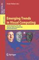
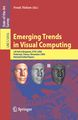

Springer electronic proceedings  Video lectures on DVD
Springer electronic proceedings  Video lectures on DVD  Video lectures
Video lectures 
List of abstracts in PDF format (12 pages) (detailed programme)
|
Ecole Polytechnique |

Download poster |
 Aerial view of "X" |
Virtual visit of the campus by means of panoramic images (auditorium Pierre Faure is located in the Grand Hall)
A state-of-the-art peer-reviewed edited book will be available from Springer-Verlag in the LNCS series.

150th anniversary of franco-japanese relationships.
- 2007: Complex Industrial Systems: Modelling, Verification and Optimization.
- 2006: Colloquium Emerging Trends in Concurrency Theory.